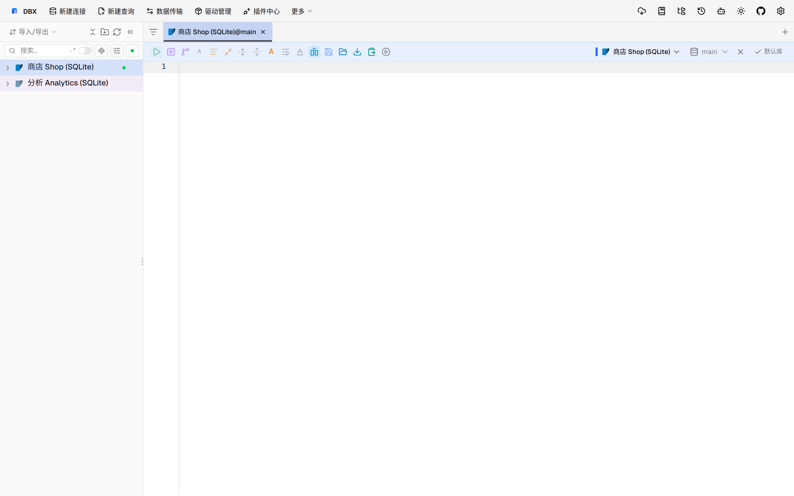
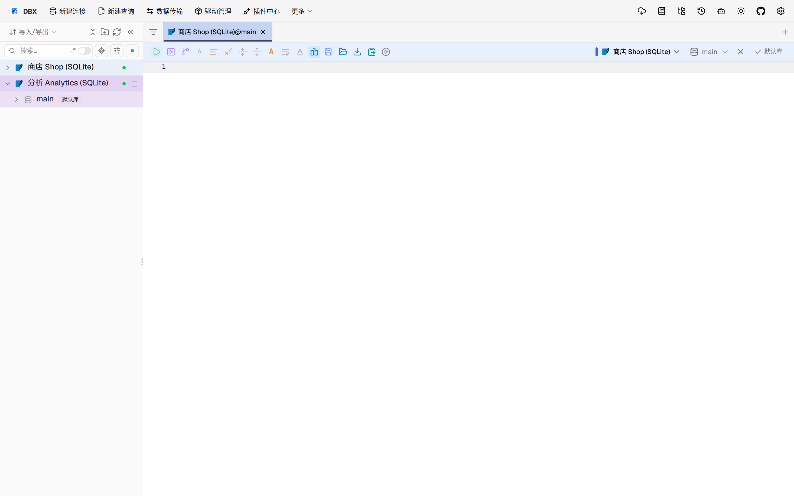
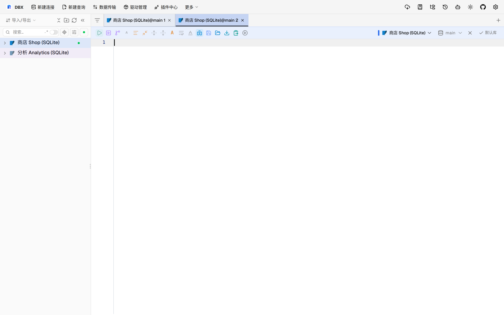

#11536 界面预览
commit 8316f45 · 回到 PR · 这个 PR 让 OceanBase Oracle 的 SQL 补全也支持包成员树与重载身份：包成员按 routine_id 区分，补全能保留参数顺序、方向、默认值和返回类型，且对带引号的包名/成员名更准确。左侧树和编辑器补全结果都会受影响。
⚠️ 这次录制有 9 步没能按计划执行；带 ⚠️ 的截图拍摄于步骤失败之后，画面未必是说明文字所描述的状态。
红线是鼠标走过的轨迹，红色圆环是一次点击；底部文字是这一步在做什么。多个场景各自从应用初始状态开始。空格暂停，← → 逐段查看。

⚠️ 包成员树与重载标识 · 显示编辑器与左侧树的当前状态

⚠️ 包成员树与重载标识 · 显示不同连接下树节点展开后的状态

⚠️ OceanBase 补全上下文与包成员分流 · 查看带引号的补全上下文与候选列表
⚠️ OceanBase 补全上下文与包成员分流 · 查看 OceanBase 包成员补全与签名展示